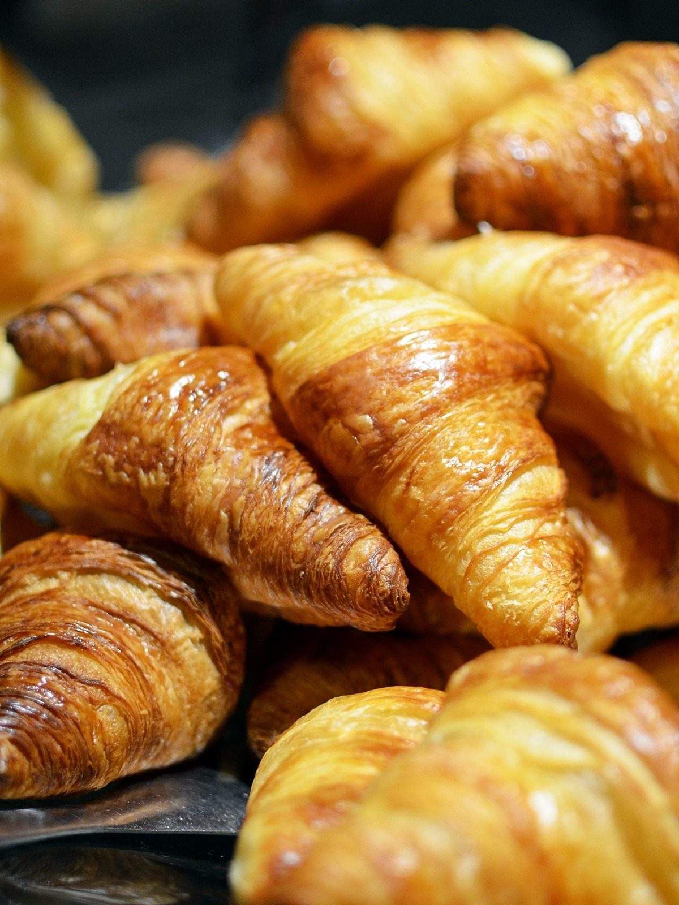
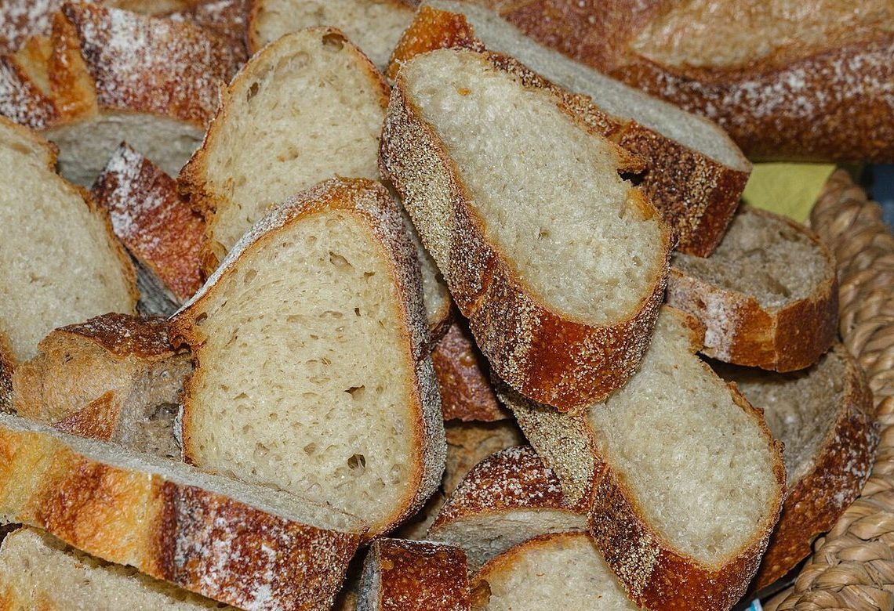
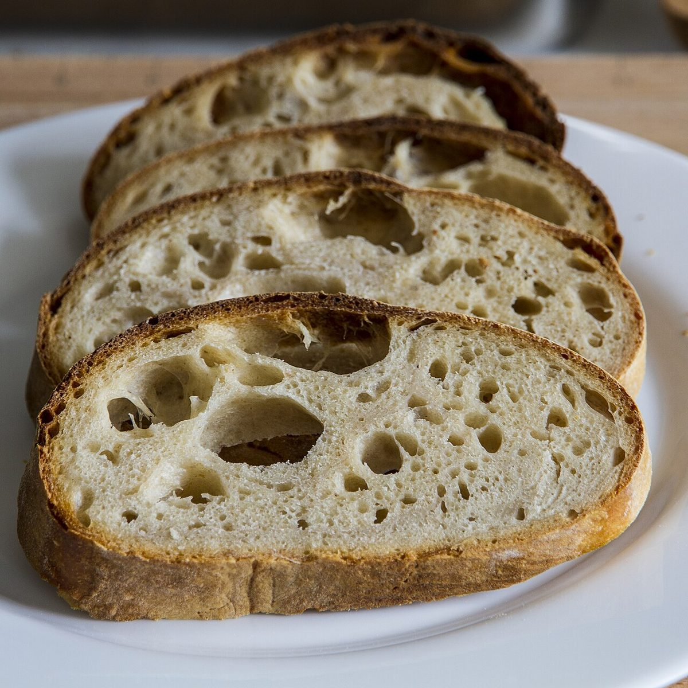
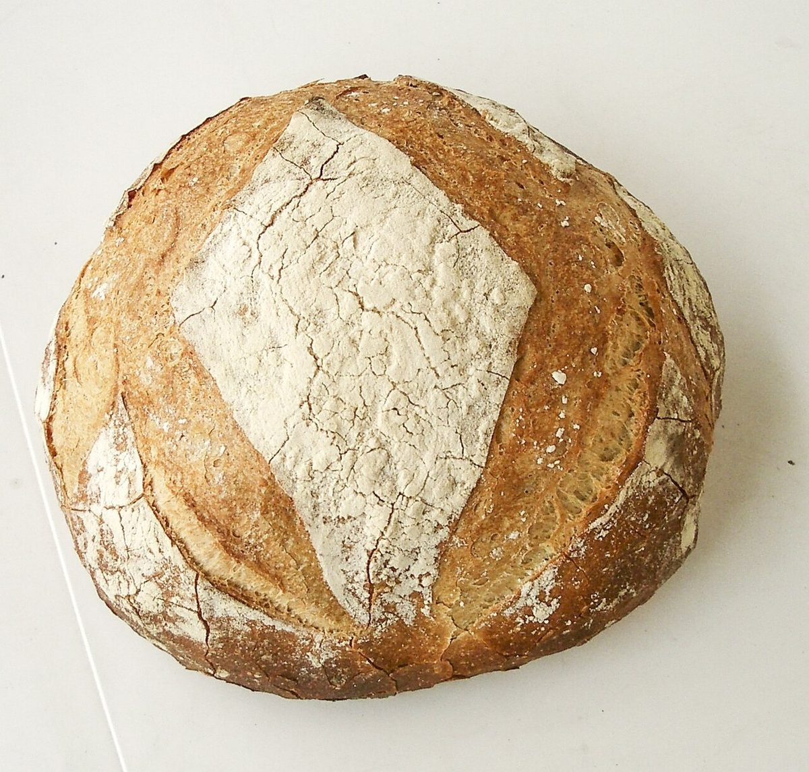
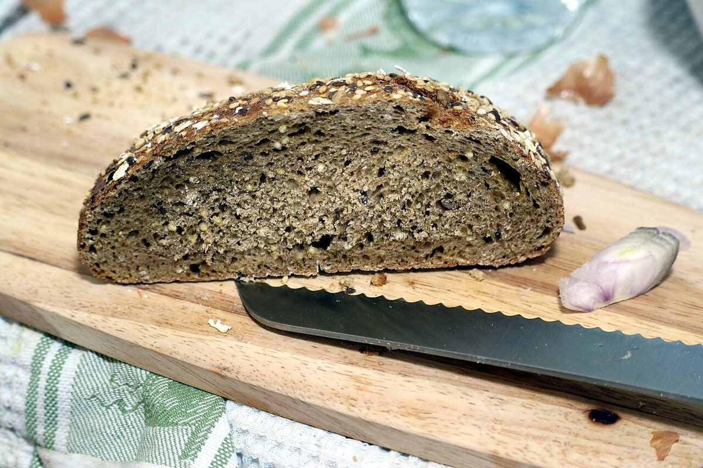

メニュー
現在、メニューの内容を準備しています。商品の種類や価格など、確認できていない情報はこのページに載せていません。ご不明な点は、お気軽にお問い合わせください。
パンのイメージ





掲載写真はフリー素材のイメージで、店舗の実際の様子・商品ではありません。他の地域で撮影されたもの、撮影地が不明なものを含みます。
現在、メニューの内容を準備しています。商品の種類や価格など、確認できていない情報はこのページに載せていません。ご不明な点は、お気軽にお問い合わせください。





掲載写真はフリー素材のイメージで、店舗の実際の様子・商品ではありません。他の地域で撮影されたもの、撮影地が不明なものを含みます。